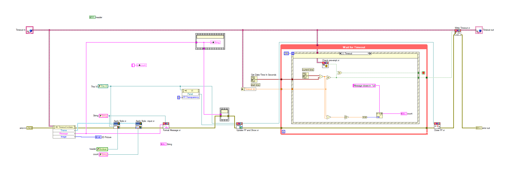
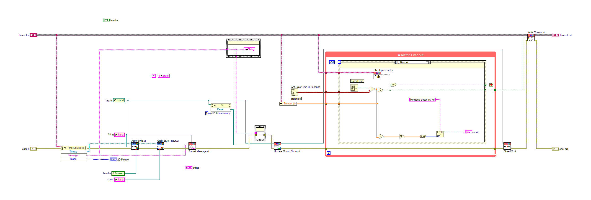
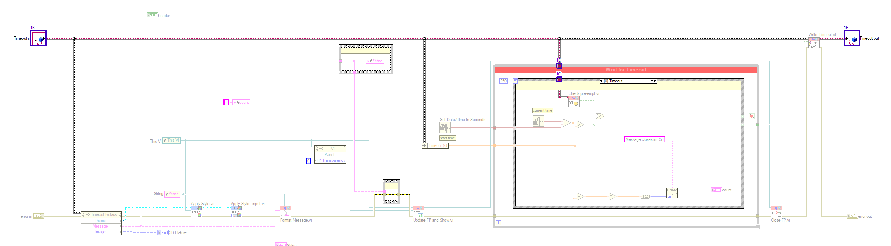
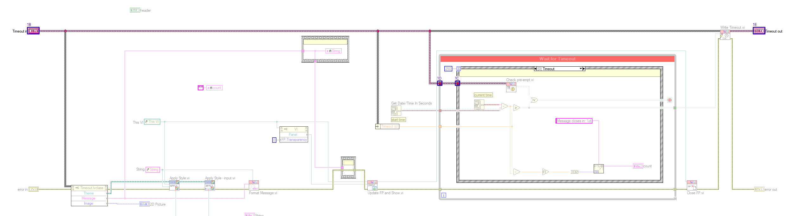
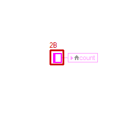
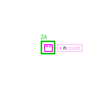
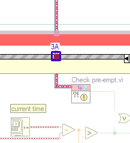
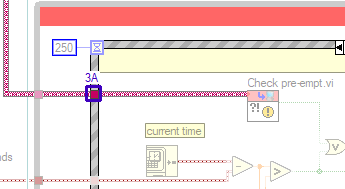

LabVIEW VI Comparison Report
7/13/2026 7:48:41 PM
First VI: C:\workspace-base\Standard\Timeout\Display.viSecond VI: C:\workspace\Standard\Timeout\Display.vi
| Front Panel Overview | ||

| ||
| Block Diagram Overview | ||
|
 |
 |
- Front Panel
- Front Panel Position/Size
- Block Diagram Functional
- Block Diagram Cosmetic
- VI Attribute
Detailed Information
1. Block Diagram objects
| C:\workspace-base\Standard\Timeout\Display.vi | C:\workspace\Standard\Timeout\Display.vi | |
|
 |
 |
- Name Label - moved : changed from "(-77,-36)" to "(-74,-34)"
- Front Panel Terminal "Timeout in" - resized : changed from "" to ""
- Tunnel - moved : changed from "(1456,85)" to "(1328,135)"
- Loop Tunnel - moved : changed from "(1456,46)" to "(1272,135)"
- Front Panel Terminal "Timeout out" - resized : changed from "" to ""
- Name Label - moved : changed from "(2303,-36)" to "(2300,-34)"
2. Block Diagram objects
| C:\workspace-base\Standard\Timeout\Display.vi | C:\workspace\Standard\Timeout\Display.vi | |
|
 |
 |
- Empty String Constant "count" - added at (512,145)
- String Constant "count" - deleted at (514,145)
- wiring changes
3. Block Diagram objects
| C:\workspace-base\Standard\Timeout\Display.vi | C:\workspace\Standard\Timeout\Display.vi | |
|
 |
 |
- Tunnel - moved : changed from "(1456,85)" to "(1328,135)"
4. VI Attribute - Documentation (VI Properties)
- description text : changed from "This vi displays the timeout Popup. Code Developed By: Daniel Coons Technology Service Corporation 1983 S Liberty Drive Bloomington, IN 47403 Phone: 812 558-7100 daniel.coons@tsc.com www.tsc.com/atcs" to "This vi displays the timeout Popup. Code Developed By: + Daniel Coons + https://github.com/danielcoons/tsc-pop-up"
5. VI Attribute - Execution (VI Properties)
- Allow Debugging : changed from "enabled" to "disabled"